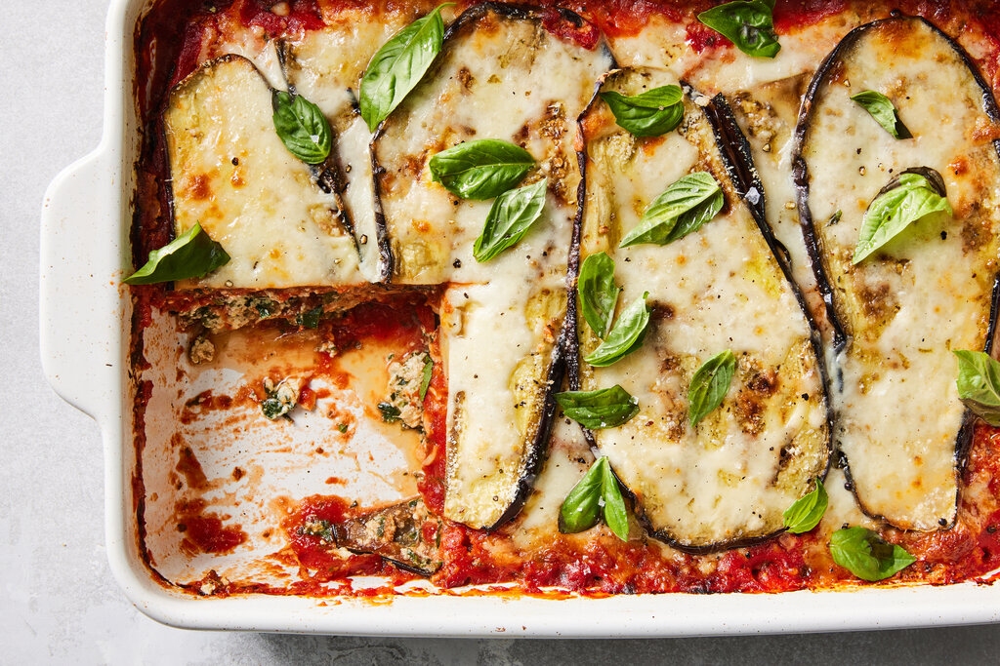

Eggplant Lasagna

Description
This eggplant lasagna recipe uses tender roasted eggplant
slices instead of lasagna noodles for a delicious low carb meal.
This recipe can easily be made vegetarian.
Ingredients
- 1 teaspoon olive oil for brushing
- 2 large eggs
- 2 tablespoons water
- 1 cup grated Parmesan cheese
- 1 cup Italian-seasoned bread crumbs
- salt and ground black pepper to taste
- 2 large eggplants, peeled and sliced into 1/2-inch rounds
- 2 tablespoons olive oil
- 1 pound ground beef
- 48 ounces chunky tomato sauce
- 2 cups shredded mozzarella cheese
Steps
- Preheat the oven to 375 degrees F (190 degrees C).
Grease 2 baking sheets and a 9x13-inch baking dish
with 1 teaspoon olive oil.
- Whisk together eggs and water in a shallow dish.
Combine Parmesan cheese, bread crumbs, salt, and
pepper in a separate shallow dish.
- Dip eggplant slices into egg mixture, then press into
bread crumb mixture. Gently tap off any excess crumbs.
Arrange breaded eggplant slices on the prepared baking
sheets.
- Bake in the preheated oven until the bottoms are golden
brown, 20 to 25 minutes. Flip eggplant and continue
baking until tender, 20 to 25 minutes. Set aside.
- Increase the oven temperature to 400 degrees F
(200 degrees C).
- Heat 2 tablespoons olive oil in a skillet over medium-high
heat. Stir in ground beef; season with salt and pepper.
Cook and stir until beef is browned and crumbly, about
10 minutes. Drain excess grease. Stir tomato sauce into
ground beef; bring to a simmer, then set sauce aside.
- Place 1/3 of the eggplant slices on the bottom of the
prepared baking dish. Pour 1/3 of the meat sauce on top
of eggplant layer.
- Sprinkle 1/3 of the mozzarella cheese on top of
sauce layer. Repeat this step 2 more times, finishing
with a layer of mozzarella cheese.
- Bake in the preheated oven until cheese is melted and
sauce is bubbling, 10 to 15 minutes. Cool for 5 minutes
before slicing.